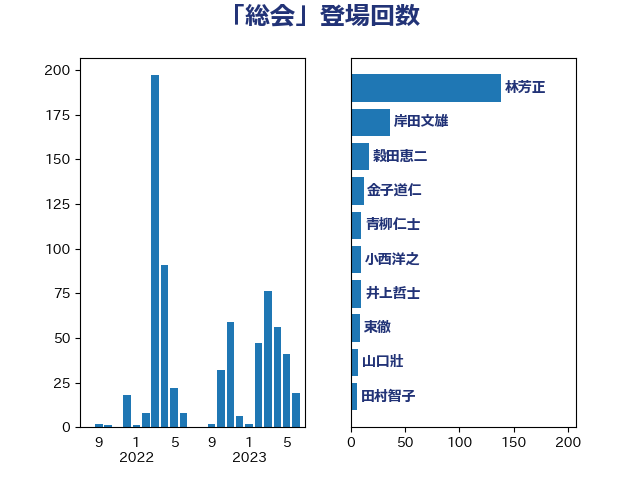

単語「総会」

| 林芳正 | 自由民主党 | 138 回 |
| 岸田文雄 | 自由民主党 | 36 回 |
| 穀田恵二 | 日本共産党 | 17 回 |
| 金子道仁 | 日本維新の会 | 12 回 |
| 青柳仁士 | 日本維新の会 | 10 回 |
| 小西洋之 | 立憲民主党 | 10 回 |
| 井上哲士 | 日本共産党 | 10 回 |
| 東徹 | 日本維新の会 | 9 回 |
| 山口壯 | 自由民主党 | 7 回 |
| 田村智子 | 日本共産党 | 6 回 |
| 櫻井周 | 立憲民主党 | 6 回 |
| 高橋光男 | 公明党 | 5 回 |
| 篠原豪 | 立憲民主党 | 5 回 |
| 稲津久 | 公明党 | 5 回 |
| 水野素子 | 立憲民主党 | 5 回 |
| 松野博一 | 自由民主党 | 5 回 |
| 古川禎久 | 自由民主党 | 5 回 |
| 青山大人 | 立憲民主党 | 4 回 |
| 平木大作 | 公明党 | 4 回 |
| 岩渕友 | 日本共産党 | 4 回 |
| 山添拓 | 日本共産党 | 4 回 |
| 山下芳生 | 日本共産党 | 4 回 |
| 小田原潔 | 自由民主党 | 4 回 |
| 加藤勝信 | 自由民主党 | 4 回 |
| 馬場雄基 | 立憲民主党 | 3 回 |
| 谷合正明 | 公明党 | 3 回 |
| 笹川博義 | 自由民主党 | 3 回 |
| 笠井亮 | 日本共産党 | 3 回 |
| 松原仁 | 立憲民主党 | 3 回 |
| 本村伸子 | 日本共産党 | 3 回 |
| 徳永エリ | 立憲民主党 | 3 回 |
| 宮本岳志 | 日本共産党 | 3 回 |
| 上田清司 | 国民民主党 | 3 回 |
| 上川陽子 | 自由民主党 | 3 回 |
| 齋藤健 | 自由民主党 | 2 回 |
| 高良鉄美 | 無所属 | 2 回 |
| 高市早苗 | 自由民主党 | 2 回 |
| 音喜多駿 | 日本維新の会 | 2 回 |
| 鈴木俊一 | 自由民主党 | 2 回 |
| 赤嶺政賢 | 日本共産党 | 2 回 |
| 谷公一 | 自由民主党 | 2 回 |
| 西村明宏 | 自由民主党 | 2 回 |
| 篠原孝 | 立憲民主党 | 2 回 |
| 田島麻衣子 | 立憲民主党 | 2 回 |
| 渡辺周 | 立憲民主党 | 2 回 |
| 浮島智子 | 公明党 | 2 回 |
| 横山信一 | 公明党 | 2 回 |
| 榛葉賀津也 | 国民民主党 | 2 回 |
| 松川るい | 自由民主党 | 2 回 |
| 斉藤鉄夫 | 公明党 | 2 回 |
| 徳永久志 | 無所属 | 2 回 |
| 後藤茂之 | 自由民主党 | 2 回 |
| 平林晃 | 公明党 | 2 回 |
| 山田太郎 | 自由民主党 | 2 回 |
| 大口善徳 | 公明党 | 2 回 |
| 塩村あやか | 立憲民主党 | 2 回 |
| 和田政宗 | 自由民主党 | 2 回 |
| 吉良よし子 | 日本共産党 | 2 回 |
| 北神圭朗 | 無所属 | 2 回 |
| 勝部賢志 | 立憲民主党 | 2 回 |
| 仁比聡平 | 日本共産党 | 2 回 |
| 高橋千鶴子 | 日本共産党 | 1 回 |
| 高木宏壽 | 自由民主党 | 1 回 |
| 高木啓 | 自由民主党 | 1 回 |
| 須藤元気 | 無所属 | 1 回 |
| 青木一彦 | 自由民主党 | 1 回 |
| 阿達雅志 | 自由民主党 | 1 回 |
| 長谷川英晴 | 自由民主党 | 1 回 |
| 鈴木貴子 | 自由民主党 | 1 回 |
| 野田国義 | 立憲民主党 | 1 回 |
| 野田佳彦 | 立憲民主党 | 1 回 |
| 野村哲郎 | 自由民主党 | 1 回 |
| 遠藤良太 | 日本維新の会 | 1 回 |
| 足立康史 | 日本維新の会 | 1 回 |
| 西田実仁 | 公明党 | 1 回 |
| 西村康稔 | 自由民主党 | 1 回 |
| 菅義偉 | 自由民主党 | 1 回 |
| 若林健太 | 自由民主党 | 1 回 |
| 若松謙維 | 公明党 | 1 回 |
| 米山隆一 | 立憲民主党 | 1 回 |
| 竹内真二 | 公明党 | 1 回 |
| 福田昭夫 | 立憲民主党 | 1 回 |
| 福島伸享 | 無所属 | 1 回 |
| 神谷政幸 | 自由民主党 | 1 回 |
| 礒崎哲史 | 国民民主党 | 1 回 |
| 石井苗子 | 日本維新の会 | 1 回 |
| 石井章 | 日本維新の会 | 1 回 |
| 石井啓一 | 公明党 | 1 回 |
| 田村貴昭 | 日本共産党 | 1 回 |
| 玄葉光一郎 | 立憲民主党 | 1 回 |
| 猪口邦子 | 自由民主党 | 1 回 |
| 牧義夫 | 立憲民主党 | 1 回 |
| 牧山ひろえ | 立憲民主党 | 1 回 |
| 熊谷裕人 | 立憲民主党 | 1 回 |
| 清水貴之 | 日本維新の会 | 1 回 |
| 清水真人 | 自由民主党 | 1 回 |
| 津島淳 | 自由民主党 | 1 回 |
| 池田佳隆 | 自由民主党 | 1 回 |
| 永岡桂子 | 自由民主党 | 1 回 |
| 水岡俊一 | 立憲民主党 | 1 回 |
| 武見敬三 | 自由民主党 | 1 回 |
| 武井俊輔 | 自由民主党 | 1 回 |
| 森本真治 | 立憲民主党 | 1 回 |
| 森山浩行 | 立憲民主党 | 1 回 |
| 柴田巧 | 日本維新の会 | 1 回 |
| 松本尚 | 自由民主党 | 1 回 |
| 松本剛明 | 自由民主党 | 1 回 |
| 松木けんこう | 立憲民主党 | 1 回 |
| 東国幹 | 自由民主党 | 1 回 |
| 本田太郎 | 自由民主党 | 1 回 |
| 木村英子 | れいわ新選組 | 1 回 |
| 有村治子 | 自由民主党 | 1 回 |
| 斎藤嘉隆 | 立憲民主党 | 1 回 |
| 志位和夫 | 日本共産党 | 1 回 |
| 山際大志郎 | 自由民主党 | 1 回 |
| 山田賢司 | 自由民主党 | 1 回 |
| 山田勝彦 | 立憲民主党 | 1 回 |
| 山本博司 | 公明党 | 1 回 |
| 山本剛正 | 日本維新の会 | 1 回 |
| 山岡達丸 | 立憲民主党 | 1 回 |
| 山口那津男 | 公明党 | 1 回 |
| 小池晃 | 日本共産党 | 1 回 |
| 小山展弘 | 立憲民主党 | 1 回 |
| 寺田静 | 無所属 | 1 回 |
| 宮崎雅夫 | 自由民主党 | 1 回 |
| 宮崎勝 | 公明党 | 1 回 |
| 太栄志 | 立憲民主党 | 1 回 |
| 大野泰正 | 自由民主党 | 1 回 |
| 大野敬太郎 | 自由民主党 | 1 回 |
| 大西健介 | 立憲民主党 | 1 回 |
| 大島敦 | 立憲民主党 | 1 回 |
| 塩川鉄也 | 日本共産党 | 1 回 |
| 堀井巌 | 自由民主党 | 1 回 |
| 城内実 | 自由民主党 | 1 回 |
| 坂井学 | 自由民主党 | 1 回 |
| 和田有一朗 | 日本維新の会 | 1 回 |
| 吉田久美子 | 公明党 | 1 回 |
| 吉田はるみ | 立憲民主党 | 1 回 |
| 吉井章 | 自由民主党 | 1 回 |
| 古賀之士 | 立憲民主党 | 1 回 |
| 古川康 | 自由民主党 | 1 回 |
| 佐藤正久 | 自由民主党 | 1 回 |
| 伊藤渉 | 公明党 | 1 回 |
| 伊藤岳 | 日本共産党 | 1 回 |
| 伊波洋一 | 無所属 | 1 回 |
| 伊東信久 | 日本維新の会 | 1 回 |
| 中村裕之 | 自由民主党 | 1 回 |
| 中川貴元 | 自由民主党 | 1 回 |
| 下野六太 | 公明党 | 1 回 |
| 上杉謙太郎 | 自由民主党 | 1 回 |
| 三浦信祐 | 公明党 | 1 回 |